文本
试题
题尾
卷尾
其他
页面布局

级别 | 考点和演练 | 题型 | 考查内容 |
1级 | 光学基本定律 | 选择题/计算题 | 光的折射定律、折射率 |
2级 | 光路分析 | 选择题/计算题 | 光路图、几何分析 |
3级 | 光导纤维 | 选择题 | 全反射 |
4级 | 全反射棱镜 | 选择题/计算题 | 全反射、光路图、几何分析 |
5级 | 测玻璃折射率 | 实验题 | 实验操作、注意事项 |
6级 | 光的色散 | 选择题 | 不同色光折射率大小关系 |

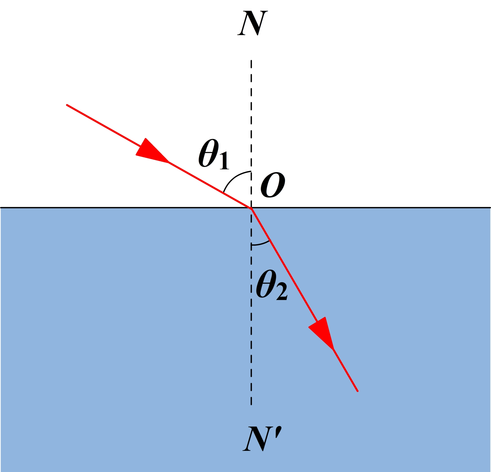
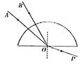
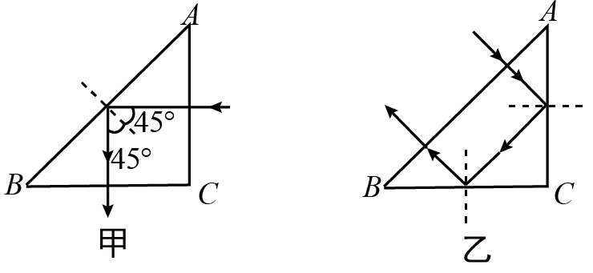
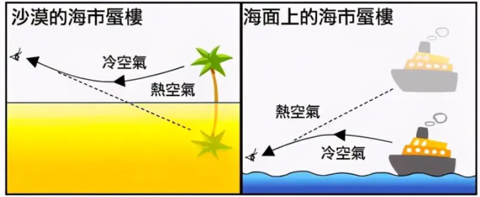
电磁波谱 | 可见光 | ||
无线电、红外线 | 红、橙、黄、绿、蓝、靛、紫 | 紫外线、射线、 射线 | |
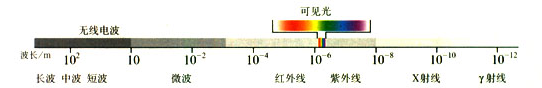 | |||
波长 | 减少 | ||
频率 | 增加 | ||
真空光速 | 不变 常数c | ||
介质光速 | 减少 (为介质的绝对折射率) | ||
折射率 | 增加（同一介质对不同频率的光折射率不同—色散现象） | ||
折射角 | 减少 | ||
全反射临界角 | 减少，更容易发生全反射 | ||
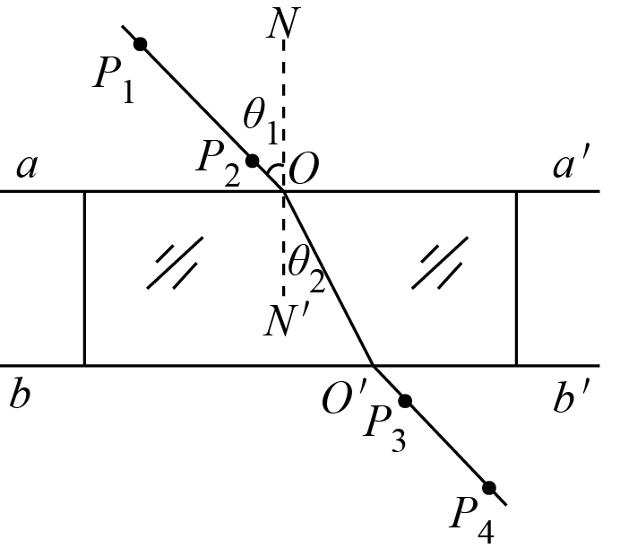

如图所示，将一个半圆形玻璃砖置于空气中，当一束单色光入射到玻璃砖的圆心O时，下列情况不可能发生的是（ ）
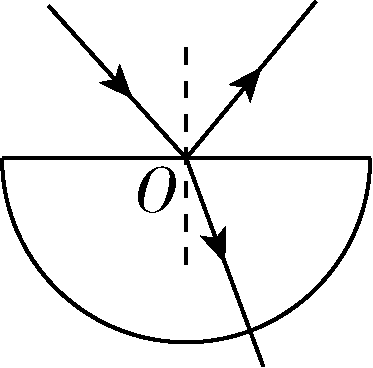
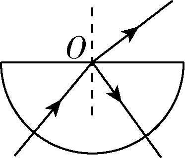
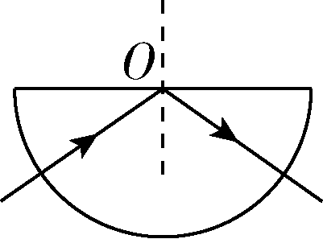
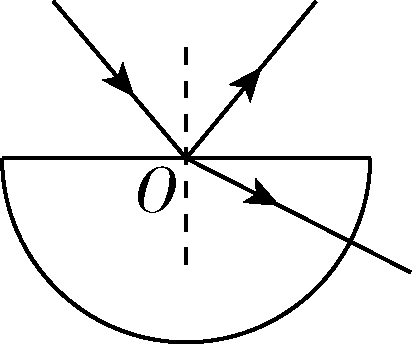

某同学测定一块玻璃的折射率，他用测得的多组入射角θ1与折射角θ2作出；sinθ1-sinθ2图像，如图所示。下列说法正确的是（ ）
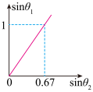
如图甲所示，在平静的水面下有一个点光源S，它发出的光包含两种单色光，分别为红光和蓝光（折射率蓝光>红光）。光从如图乙所示水面上的圆形区域中射出，该区域分为Ⅰ、Ⅱ两部分，如图乙所示。则下列说法正确的是（ ）
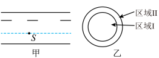
区域Ⅰ为红、蓝复色光，区域Ⅱ为红色单色光
区域Ⅰ为红色单色光，区域Ⅱ为蓝色单色光
区域Ⅰ为红、蓝复色光，区域Ⅱ为蓝色单色光
区域Ⅰ为红色单色光，区域Ⅱ为红、蓝复色光
用下面的方法可以测量液体的折射率：取一个半径为
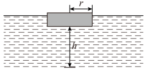
写出用
用这种方法实际做一下，求出水的折射率。
如图所示，楔形玻璃的横截面
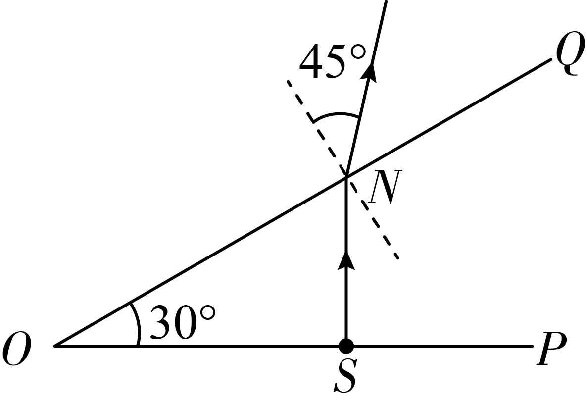
如图所示，
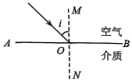
光以
光在该介质中的传播速度
光由该介质射向空气，发生全反射的临界角
某透明均匀介质的截面如图所示，直角三角形的直角边BC与半圆形直径重合，∠ACB = 30°，半圆形的半径为R。一束橙光从E点射入介质，其延长线过半圆形的圆心O点，且E、O两点距离为R，此时的折射角
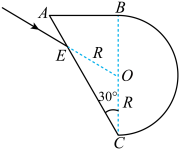
如图所示，一条长
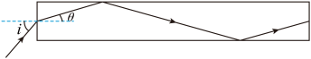
该激光在光导纤维中的速度的大小v；
该激光由光导纤维左端射入时的折射角
该激光在光导纤维中传输所经历的时间t．
光导纤维的结构如图所示，其内芯和外套材料不同，光在内芯中传播．以下关于光导纤维的说法正确的是（ ）
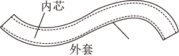
光导纤维按沿径向折射率的变化可分为阶跃型和连续型两种。阶跃型的光导纤维分为内芯和外套两层，内芯的折射率比外套的大。连续型光导纤维的折射率中心最高，沿径向逐渐减小，外表面附近的折射率最低。关于光在连续型光导纤维中的传播，图中能正确表示传播路径的是（ ）
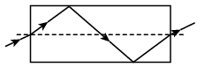
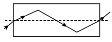
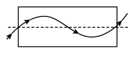
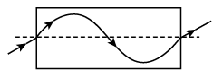
光纤通信采用光导纤维，可简化为半径为
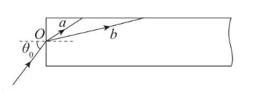
该玻璃材料对
若
若
自行车上的红色尾灯不仅是装饰品，也是夜间骑车的安全指示灯，它能把来自后面的光照反射回去。某种自行车尾灯可简化为由许多整齐排列的等腰直角棱镜（折射率n>
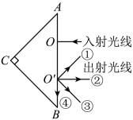
如图所示，ABC是一个用折射率
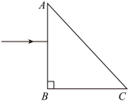
一种“光开关”的核心区如图中虚线框区域所示，其中
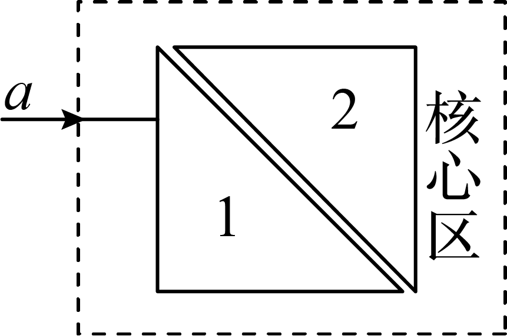
单色光
若
若充入的介质相对棱镜是光疏介质，则有可能实现“开”功能
若充入的介质相对棱镜是光密介质，则有可能实现“关”功能
如图甲所示，某同学在“测定玻璃的折射率”的实验中，先将白纸平铺在木板上并用图钉固定，平行玻璃砖平放在白纸上，然后在白纸上确定玻璃砖的界面aaʹ和bbʹ．O为直线AO与aaʹ的交点．在直线OA上竖直地插上P1、P2两枚大头针．
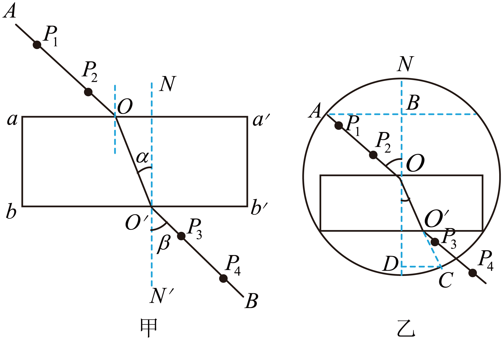
该同学接下来要完成的两个必要步骤是（ ）
过P3、P4作直线交bbʹ于Oʹ，连接OOʹ，过O作垂直于aaʹ的直线kgʹ，测量图甲中角α和β的大小，则玻璃砖的折射率n= 。
某同学在测量入射角和折射角时，由于没有量角器，在完成了光路图以后，以O点为圆小，OA为半径画圆，交OOʹ延长线于C点，过A点和C点作垂直法线的直线分别交于B点和D点，如图所示，若他测得AB=6cm，CD=4cm，则可求出玻璃的折射率n= 。
对实验中的一些具体问题，下列说法中正确的是（ ）
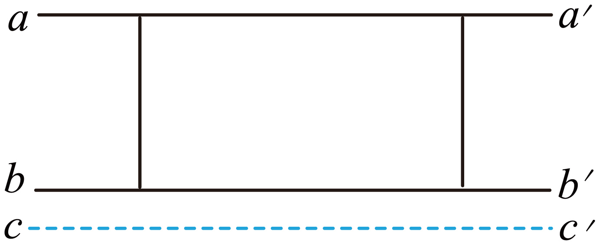
该小组同学根据所学的光学知识，设计了一个液体折射率测量仪，如下图所示。在一圆
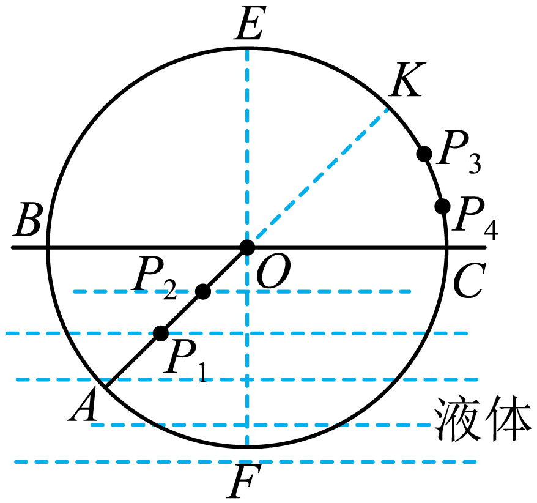
如图所示，在做“测量玻璃的折射率”实验时，先在白纸上放好一块两面平行的玻璃砖，描出玻璃砖的两个边MN和PQ，在玻璃砖的一侧插上两枚大头针
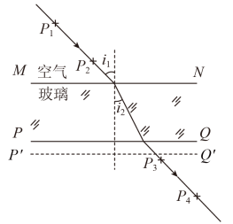
如图甲所示，小明同学在“测定玻璃的折射率”的实验中，先将白纸平铺在木板上并用图钉固定，玻璃砖平放在白纸上，然后在白纸上确定玻璃砖的界面aa′和bb′．O为直线AO与aa′的交点，在直线AO上竖直地插上P1、P2两枚大头针．
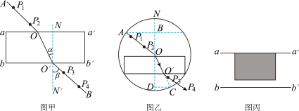
下面关于该实验的说法正确的是（ ）
插上大头针
为了减小误差，
为减小测量误差，
实验中玻璃砖在纸上的位置不可移动，可用玻璃砖代替尺子画出边界线以固定玻璃砖在纸上的位置
该同学在完成了光路图以后，以O点为圆心，OA为半径画圆，交OO′延长线于C点，过A点和C点作垂直法线的直线分别与法线交于B点和D点，如图乙所示，若他测得AB=7.5cm，CD=5cm，则可求出玻璃的折射率n= ．
小华同学在纸上画出的界面aa′、bb′与玻璃砖位置的关系如图丙所示，他的其他操作均正确，且均以aa′、bb′为界面画光路图，则该同学测得的折射率测量值 真实值．（填“大于、小于、等于”）
某同学用半圆形玻璃砖测定玻璃的折射率（如图所示）．实验的主要过程如下：
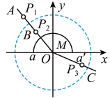
a.把白纸用图钉钉在木板上，在白纸上作出直角坐标系xOy，在白纸上画一条线段AO表示入射光线．b.把半圆形玻璃砖M放在白纸上，使其底边aa′与Ox轴重合．c.用一束平行于纸面的激光从y>0区域沿y轴负方向射向玻璃砖，并沿x轴方向调整玻璃砖的位置，使这束激光从玻璃砖底面射出后，仍沿y轴负方向传播．d.在AO线段上竖直地插上两枚大头针P1、P2．e.在坐标系的y<0的区域内竖直地插上大头针P3，并使得从P3一侧向玻璃砖方向看去，P3能同时挡住观察P1和P2的视线．f.移开玻璃砖，作OP3连线，用圆规以O点为圆心画一个圆（如图中虚线所示），此圆与AO线交点为B，与OP3连线的交点为C．确定出B点到y轴、x轴的距离分别为x1、y1，C点到y轴、x轴的距离分别为x2、y2．
根据上述所确定出的B、C两点到两坐标轴的距离，可知此玻璃折射率测量值的表达式为n= ．
若实验中该同学在y<0的区域内，从任何角度都无法透过玻璃砖看到P1、P2，其原因可能是 ．
如图所示，一束平行光经玻璃三棱镜折射后分解为互相分离的a、b、c三束单色光．比较a、b、c三束光，可知（ ）
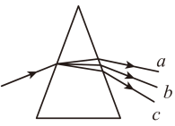
如图所示，一细束复色光从水中由O点斜射入真空后，分开为a、b两细束单色光。下列说法正确的是（ ）
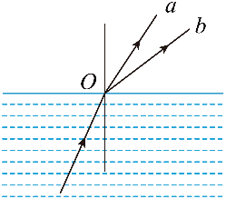
如图所示，两束单色光A、B分别沿半径方向由空气射入半圆形玻璃砖，出射时合成一束复色光P，下列说法正确的是（ ）
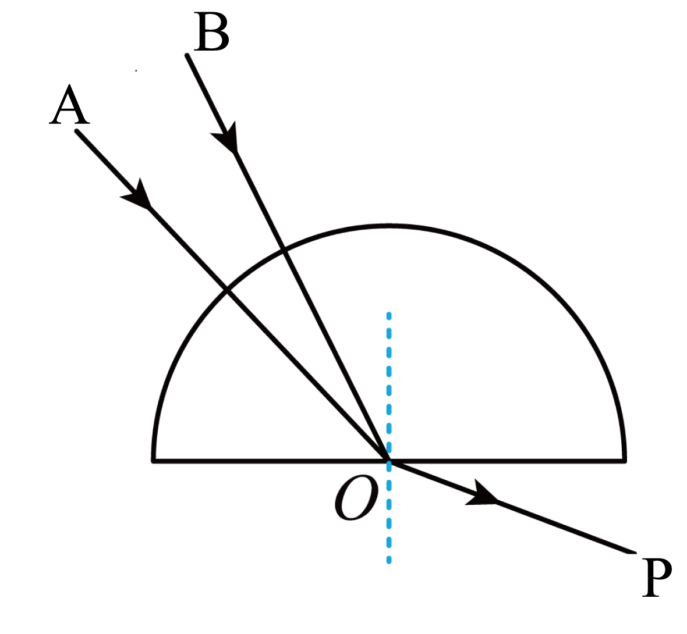
图甲为太阳光穿过转动的六角形冰晶形成“幻日”的示意图，图乙为太阳光穿过六角形冰晶的过程，a、b是其中两种单色光的光路，则在冰晶中（ ）
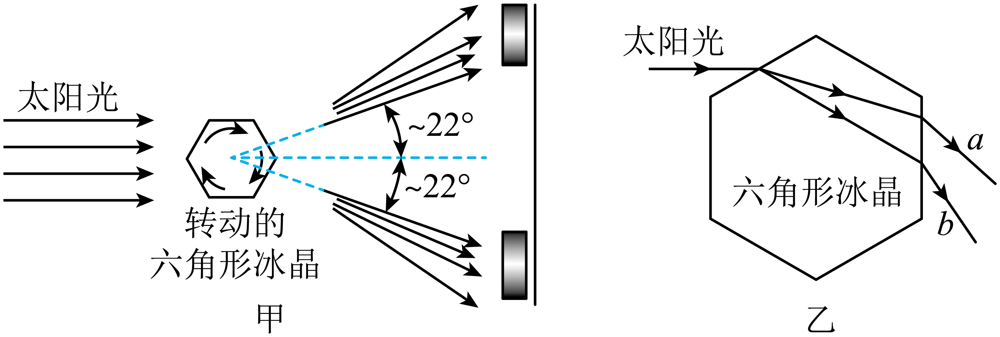
如图所示，是光在真空和某介质的界面
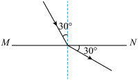
一束单色光从介质内射入空气，其光路如图所示，下列说法中正确的是（ ）
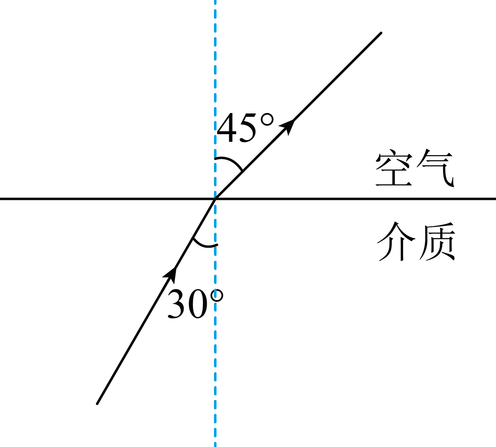
平行的a、b两种单色光的光束以相同的入射角从空气斜射向某种长方体玻璃砖上表面的同一位置，在玻璃砖下表面将分开为不同的单色光光束．若a光的频率小于b光的频率，则以下光路图中正确的是（ ）
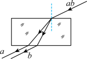
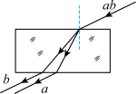
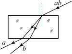
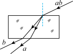
在测量玻璃的折射率的实验中，某同学利用插针法得到的图像如图所示。关于此实验的操作和误差
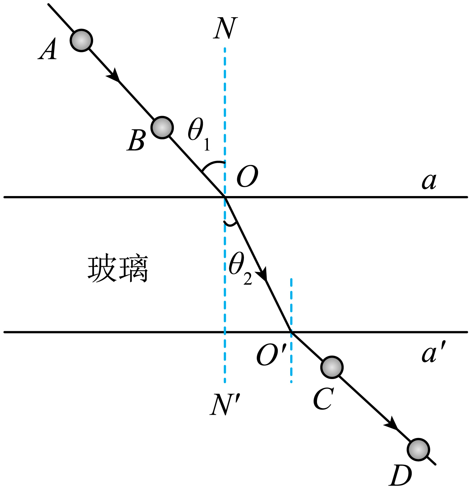
选择
实验中入射角
减小C、D两大头针的距离，可以减小实验误差
若换用
如图所示，两束单色光a和b从水中射向水面的O点，它们进入空气后的光合成一束光c。根据这一现象可知，下列说法正确的是（ ）
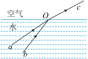
以往，已知材料的折射率都为正值（n>0）．现已有针对某些电磁波设计制作的人工材料，其折射率可以为负值（n< 0），称为负折射率材料．位于空气中的这类材料，入射角i与折射角r依然满足
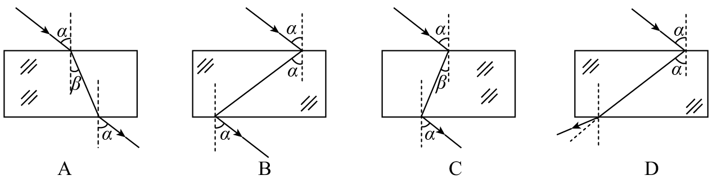
如图所示，一束光沿半圆形玻璃砖的半径射到其平直面上，并在该界面处发生反射和折射。当逐渐增大入射角时，下列说法正确的是（ ）
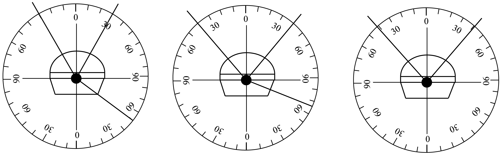
反射光线和折射光线都逐渐减弱
反射光线和折射光线的夹角逐渐增大
折射光线逐渐减弱，直至完全消失
折射角和入射角的比值不变
如图所示，MN是空气与某种液体的分界面，一束红光由空气射到分界面，一部分光被反射，一部分光进入液体中.当入射角是45°时，折射角为30°，则以下说法正确的是( )
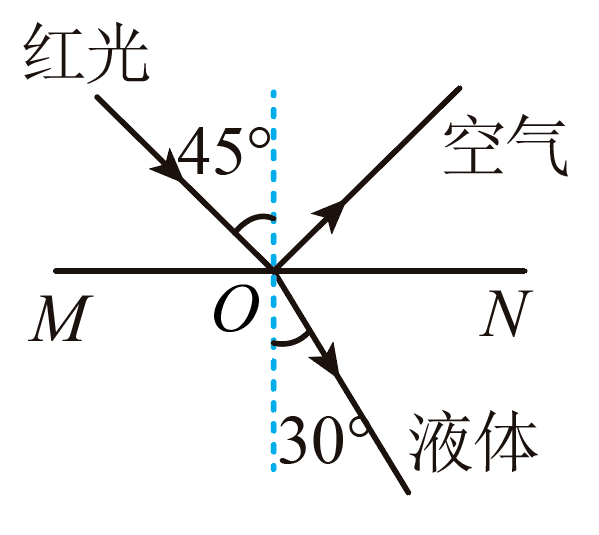
反射光线与折射光线的夹角为
该液体对红光的折射率为
该液体对红光的全反射临界角为
当紫光以同样的入射角从空气射到分界面时，折射角也是
如图所示，真空中有一个半径为R，质量分布均匀的玻璃球，频率为γ的激光束在真空中沿直线BC传播，并于玻璃球表面的C点经折射进入玻璃球，并在玻璃球表面的D点又经折射进入真空中，已知∠COD = 120°，玻璃球对该激光的折射率为
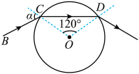
有一种光导纤维沿径向折射率的变化是连续的，称为连续型光导纤维。其折射率中心最大，沿径向逐渐减小，外表面附近的折射率最小。关于光在连续型光导纤维中的传播，下列四个图中能正确表示其传播路径的是（ ）
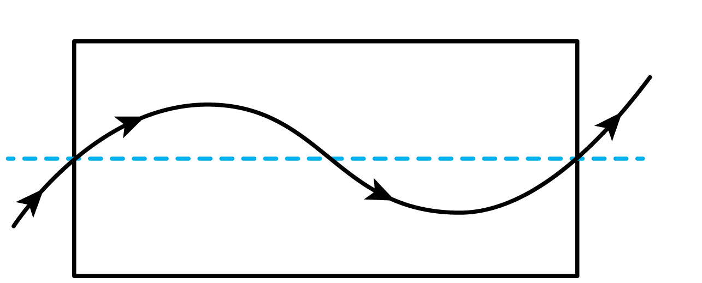
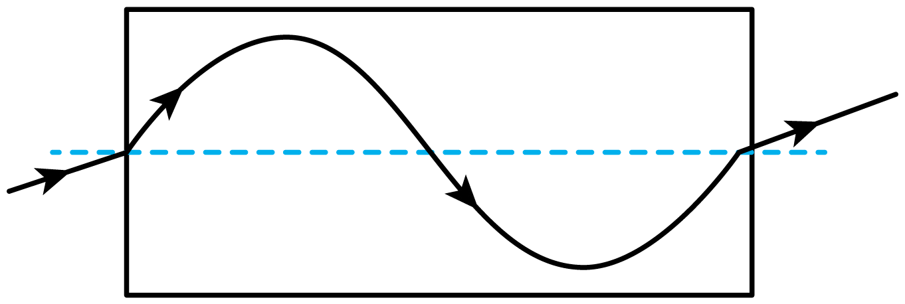
如图所示，由甲、乙两种单色光组成的一束光，从一根长直的光纤端面以
一种“光开关”的“核心区”如图虚框区域所示，其中
单色光
若不充入介质，则实现“开”功能
若充入的介质相对棱镜是光疏介质，有可能实现“开”功能
若充入的介质相对棱镜是光密介质，有可能实现“关”功能
如图所示，一个玻璃三棱镜的截面为等腰直角
在用两面平行的玻璃砖测定玻璃折射率的实验中，如图所示，某同学不慎记录玻璃砖下界面时向下平移了一些，而实验中的其他操作均正确，则测得的折射率将（ ）
如图所示，在做“测量玻璃的折射率”实验时，先在白纸上放好一块两面平行的玻璃砖，描出玻璃砖的两个边
如图所示的平面内，光束a经圆心O射入半圆形玻璃砖，进入玻璃砖后分成b、c两束单色光。下列说法正确的是（ ）
如图所示，一束复色光从空气中射入水中，分成两束单色光a和b，则下列说法正确的是（ ）
下载设置
![]()